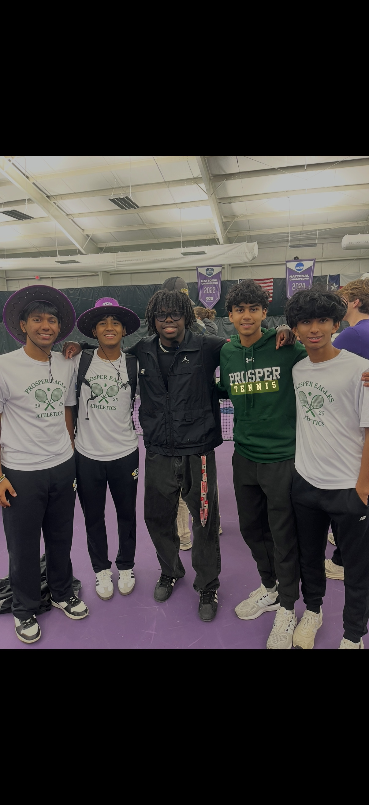

Tennis lessons for kids
Private and group lessons in Prosper, Celina, Frisco and nearby. I'm a varsity player at Prosper High School, and I teach because I want kids to fall in love with this sport the way I did.
Getting started takes three easy steps.
Fill out the booking form or text me. Your first 30-minute lesson is free, so you can see if it's a good fit.
Choose group or private, 30 minutes or 1 hour, and tell me your preferred days and times.
Every lesson focuses on fun, good technique, and building confidence on the court.
Simple pricing with no surprises.
$25 / kid
1 hour per session
Great for making friends and practicing with others.
$15 / kid
30 minutes per session
A quick, focused session for younger players.
$40
1 hour
Full one-on-one attention to work on specific skills.
$25
30 minutes
A focused one-on-one session to fix one thing at a time.
Real experience, real results, and a coach who remembers what it's like to be a kid learning the game.
Ratings and reviews from local families.
★★★★★
"Anish is one of the best instructors I have worked with, he is able to teach my son tennis lessons every day over the summer, and truly got him better. He was able to stay on time, text me 24/7 and be ontop of things like updates, court reservations and time conflicts as well. Infact he was even able to drop my son off home when I was not able to pick up him and was running late. My family appreciates all that he does for us. "
— Srikant W, Prosper
★★★★★
"Always on time, plans out lessons weeks ahead and he even drives to my home to teach my daughter tennis and work on her hand eye coordination and he even got her some icecream and a toy! "
— Vommi S, Prosper
★★★★★
"Anish was able to teach my kid, and 3 others all at the same time, and be able to take care of all of them. He was amazing and worked very well"
— Sowmya K, Frisco
Yes. Your first 30-minute lesson is free so you can see if we're a good match.
Prosper, Celina, Frisco, and nearby areas. Message me if you're not sure your location is covered.
I love working with kids and beginners. Fill out the booking form and tell me your child's age and experience level.
I've been playing tennis for over 8 years. I'm a varsity player at Prosper High School, and I started teaching because I want little kids to love tennis as much as I do. I balance school with lessons and take every student's progress seriously.
Read my full story
Book your free first lesson today, or reach out directly.
Phone: 214-430-0969 • Email: Anishyewoor@icloud.com